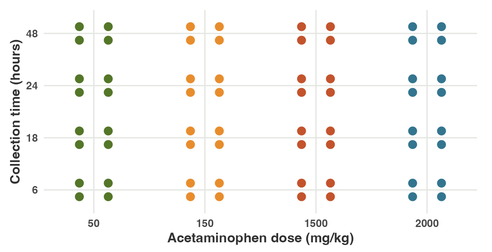

Fast and Lean: Julia Tools for High-Dimensional Omics
BigRiverEssence + BigRiverPlots
Abhisek Banerjee · University of Tennessee Health Sciences
The collaboration exposed an omics bottleneck
The scientific setting
Working with Dr. Gregory Farage and Dr. Saunak Sen brought us to a recurring challenge: omics studies measure far more features than we can inspect directly.
What is omics data?
Omics data measure large collections of biological molecules across many samples.
Examples: DNA, RNA, proteins, and metabolites.
A single sample may contain thousands of correlated measurements.
One example of dimension reduction: PCA
Omics datasamples × thousands of correlated measurements
→
PCAcompress the dominant structure
→
Interpretable outputsscores, loadings, and reduced dimensions
Dimension reduction is the first bridge from a large omics matrix to an analysis that can be explored and explained.
The engineering goal was speed without weight
The ecosystem we wanted
The analytical methods had to remain practical as matrices grew: fast execution, careful memory use, fewer allocations, and a small dependency surface.
FastNumerical kernels should not become the bottleneck.
Memory-awareLarge intermediate matrices must be handled carefully.
Low allocationReuse storage and avoid unnecessary temporary objects.
LightweightKeep the package focused and the dependency graph small.
Why Julia?
high-level code
→
type inference + LLVM
→
native code
Julia lets us express numerical algorithms directly while compiling type-stable kernels to optimized machine code.
Result: for suitable numerical workloads, performance can be in the same class as C—without maintaining a separate low-level implementation.
One language can support both the statistical idea and the performance-sensitive implementation.
That need became two focused Julia packages
The team-owned solution
We wanted our own lightweight numerical methods and plotting recipes—with exactly the functionality needed for the omics workflow.
BigRiverEssence.jl
The numerical layer
Dimension reduction and multivariate methods implemented around speed, memory awareness, and reusable outputs.
→
ordinary arrays scores · loadings model outputs
→
BigRiverPlots.jl
The visual layer
Lightweight recipes that turn analytical outputs into the plots our team needs to inspect and communicate results.
A lean modeling package and a lean plotting package—separate by design, connected by simple outputs.
BigRiverEssence keeps the structure that matters
What the package is—and why the name
BigRiverEssence.jl is a focused Julia package for matrix decomposition and dimension reduction in high-dimensional data, especially biological and omics matrices.
BigRiver
The wider Julia ecosystem developed for our statistical workflow.
+
Essence
Keep the low-dimensional structure that carries the useful signal.
=
BigRiverEssence
Dense, sparse, supervised, and multi-block methods behind one small analytical layer.
Large data matrices go in; compact scores, loadings, predictions, and shared structure come out.
Nine methods answer five statistical questions
A compact tour of the implemented methods
Select a method to see the question it answers. Every button corresponds to a method currently implemented in BigRiverEssence.jl.
essenceMethodFrames = [ {short:"PCA",name:"Principal Component Analysis",question:"Compress",detail:"Finds ordered directions that capture the greatest variation in one data matrix.",use:"Use it for unsupervised exploration, visualization, and low-rank representation."}, {short:"SPCA",name:"Sparse Principal Component Analysis",question:"Compress + select",detail:"Builds PCA-like components whose loadings use only a subset of variables.",use:"Use it when interpretation and feature selection matter as much as compression."}, {short:"PMD",name:"Penalized Matrix Decomposition",question:"Decompose sparsely",detail:"Constructs a low-rank matrix decomposition while constraining the component vectors to be sparse.",use:"Use it as a flexible sparse decomposition and as a foundation for sparse latent methods."}, {short:"PLS-DA",name:"Partial Least Squares Discriminant Analysis",question:"Classify",detail:"Finds latent directions in the predictors that are associated with known class labels.",use:"Use it for supervised dimension reduction and classification."}, {short:"sPLS-DA",name:"Sparse Partial Least Squares Discriminant Analysis",question:"Classify + select",detail:"Combines supervised PLS components with sparse loadings that retain selected variables.",use:"Use it when classification and a concise biomarker set are both goals."}, {short:"PLSkern",name:"Partial Least Squares Kernel Regression",question:"Predict",detail:"Builds latent variables that connect a predictor matrix to continuous or multivariate outcomes.",use:"Use it for efficient PLS regression, transformation, and prediction."}, {short:"CCA",name:"Canonical Correlation Analysis",question:"Relate two blocks",detail:"Finds paired directions that maximize association between two data matrices measured on the same samples.",use:"Use it to study shared cross-block structure."}, {short:"SCCA",name:"Sparse Canonical Correlation Analysis",question:"Relate + select",detail:"Adds sparse loadings to CCA so the cross-block relationship depends on fewer variables.",use:"Use it to identify interpretable features connecting two data sources."}, {short:"JIVE",name:"Joint and Individual Variation Explained",question:"Integrate blocks",detail:"Separates multiple matched data blocks into joint, block-specific, and residual structure.",use:"Use it when several omics assays describe the same samples."}]viewof essenceMethodPick = {const wrap =html`<div class="bre-method-selector"></div>`;const buttons = essenceMethodFrames.map((d, i) => {const b =html`<button>${d.short}</button>`; b.onclick= () =>set(i); wrap.append(b);return b; });const render = () => buttons.forEach((b, i) => b.classList.toggle("on", i === wrap.value));constset= i => { wrap.value= i;render(); wrap.dispatchEvent(newEvent("input", {bubbles:true})); }; wrap.value=0;render();return wrap;}
essenceMethodCard = {const d = essenceMethodFrames[essenceMethodPick];const card =html`<div class="bre-method-card"></div>`;const top =html`<div class="method-top"></div>`;const identity =html`<div></div>`; identity.append(html`<div class="method-name">${d.short}</div>`,html`<div class="method-full">${d.name}</div>` ); top.append(identity,html`<div class="method-question">Question: ${d.question}</div>`); card.append( top,html`<div class="method-detail">${d.detail}</div>`,html`<div class="method-use"><strong>When to use it:</strong> ${d.use}</div>` );return card;}
Speed is the main bottleneck
The challenge with existing implementations
The methods already exist in R, Python, and other ecosystems. For our omics workflow, the critical question is how quickly we can fit them again and again on matrices with thousands of variables.
SPEED
One analysis requires many repeated fits
Decompositions and iterative algorithms are rerun across components, sparsity penalties, validation folds, and permutations. When each fit is slow, exploration and model tuning become the bottleneck.
Package weightBroad packages and long dependency chains add installation, loading, and environment-management overhead.
Memory allocationCopies and temporary matrices raise peak memory use and add memory-management overhead during repeated fits.
For high-dimensional omics, performance is part of usability: the method must be fast enough to explore, tune, and repeat.
We changed the execution—not the mathematics
How BigRiverEssence solves the bottleneck
We preserved the statistical objectives and outputs, then rebuilt the hot loops to move less data, create fewer temporary arrays, and compute only what each method needs.
01
Reuse storage
Preallocate work buffers once; use @view, in-place broadcasts, reusable index vectors, and allocation-free convergence checks.
02
Write results in place
Use mul!, fused mul!, BLAS.ger!, and BLAS.syrk! instead of repeatedly creating new matrices.
03
Compute only what is needed
Prefer in-place or thin SVDs and retain only the component vectors required by the algorithm.
04
Rewrite expensive algebra
Use equivalent factorizations with small intermediates—especially in JIVE—rather than materializing large projection matrices.
Same operation. Less work.
Fused matrix update
before: C = C - A * B
after: mul!(C, A, B, -1, 1)
The product is accumulated directly into C; no full-sized temporary result is needed.
JIVE projection
before: tmp = tmp * (I - V * V’)
after: tmp .-= (tmp * V) * V’
Associativity replaces a large projector with much smaller intermediate matrices.
Preallocate once, mutate in place, and never materialize a matrix that the mathematics lets us avoid.
The optimizations paid off across all three goals
Measured gains
Across the reference comparisons, every method ran faster, numerical agreement remained strong, and selected Julia-to-Julia comparisons required less memory.
Every comparison was faster
Speed-up over the named reference · logarithmic visual scale
SPC
160×
JIVE
64×
sPLS-DA
29×
PLS-DA
8.2×
PMD
8×
SCCA
6×
PLSkern
4.7×
PCA
2×
CCA
1.1×
versus R packageversus Julia package
Reference agreement
Maximum misalignment · lower is more exact
10−5
10−8
10−11
10−14
10−17
sPLS-DA
SCCA
PLSkern
PMD
PCA
CCA
SPC
PLS-DA
JIVE
versus R packageversus Julia package
And leaner
Reduction versus Julia references
12×
8×
4×
11×
5×
PLSkern
1×
1.7×
PCA
1.2×
2×
CCA
allocationsmemory
Faster execution preserved numerical agreement while shrinking major allocation bottlenecks.
The example starts with 64 livers and 3,116 genes
The liver-toxicity dataset
In a controlled acetaminophen study, 64 rats received four doses, and liver mRNA expression was measured at 6, 18, 24, or 48 hours.
The complete study contains 3,116 gene-expression measurements and 10 clinical chemistry markers for every animal.
X
64 × 3,116
Rows are animals; columns are gene-expression measurements.
y
4 dose groups
50, 150, 1500, or 2000 mg/kg—with 16 animals in each group.
X contains 3,116 gene-expression values for each rat. y records the dose group assigned to that animal.
A balanced dose × time study
R exploration: each dot represents one rat.

Four doses × four collection times × four rats per combination = 64 samples.
One sPLS-DA task, expressed in R and Julia
Same data · same model settings
Both fits use the 64 × 3,116 expression matrix, two components, 50 selected genes per component, standardized predictors, and the same four dose classes.
RmixOmics + microbenchmark
library(mixOmics)
library(microbenchmark)
data("liver.toxicity", package = "mixOmics")
X <- data.matrix(liver.toxicity$gene)
y <- factor(liver.toxicity$treatment$Dose.Group)
fit_R <- splsda(X, y, ncomp = 2,
keepX = c(50, 50), scale = TRUE)
bench_R <- microbenchmark(
splsda(X, y, ncomp = 2,
keepX = c(50, 50), scale = TRUE),
times = 50L)
min(bench_R$time) / 1e6
Only model fitting is timed; data loading and transfer occur before each benchmark.
The Julia fit matched R and ran 6.3× faster
Same answer · lower runtime
Both implementations selected the same number of genes and identified the same strongest gene on each component.
Outputs agree
Data size
R: 64 × 3,116 Julia: 64 × 3,116
Selected genes
R: 50, 50 Julia: 50, 50
Strongest genes
A_43_P20438 A_42_P730438
The selected-feature summary is identical for both fits.
Minimum observed fit time
R
16.90 ms
Julia
2.674 ms
6.3×
faster on this benchmark
Julia benchmark: 212 allocations · 7.34 MiB
Runtime ratio: 16.90258 ÷ 2.674 = 6.32. Benchmark values depend on hardware, package versions, and benchmark conditions.
BigRiverPlots encodes statistical plots as reusable recipes
Introducing BigRiverPlots.jl
The package turns common statistical outputs—scores, loadings, explained variance, predictions, and tables—into consistent plots without requiring a particular model or analysis package.
The user supplies meaning, not drawing instructions
A scores plot needs a score matrix and, optionally, one group label per observation.
using BigRiverPlots, Plots
plot_scores(fit.variates_X;
group = y,
comps = (1, 2),
title = "sPLS-DA scores")
BigRiverPlots extracts coordinates and invokes the recipe. Plots.jl renders the resulting series with the selected backend.
What is a Julia plotting recipe?
A recipe is a dispatchable rule that translates a statistical object or set of inputs into plot series, geometry, labels, and sensible defaults.
Statistical outputscores, loadings, groups
→
RecipesBase rulevalidate, transform, define series
→
Rendered plotPlots.jl + chosen backend
LightweightThe package records recipes through RecipesBase; the plotting backend is loaded only by the user when a figure is rendered.
ReusableThe same recipe works with outputs from BigRiverEssence or any method that provides the required vectors, matrices, or tables.
Consistent, yet editableThe recipe owns statistical structure and defaults, while normal Plots attributes still control titles, colors, markers, fonts, and size.
BigRiverPlots covers the core statistical views
Authentic package output
The same lightweight recipe layer supports exploration, feature interpretation, multi-block summaries, categorical structure, and model checking.
BigRiverEssence is written in Julia, but people who are comfortable working in R can still use it directly. JuliaConnectoR connects the two languages while the familiar R workflow stays in place.
R calls BigRiverEssence
The same liver-toxicity sPLS-DA fit, launched from an R session.
Prepare the analysisWrangle the data, define X and y, and keep the surrounding workflow familiar.
JL
Run the numerical kernelsplsda executes inside BigRiverEssence; the fitted object can stay in Julia.
R
Return only what R needsBring back loadings, scores, or predictions for reporting and downstream analysis.
Keep R for the workflow; move the expensive matrix computation to Julia.
Reuse the Julia connection. Startup and first-call compilation should not be included in warmed-up timing comparisons.
Two registered packages—and an open invitation
During this internship, we developed and registered two focused packages in Julia’s General registry.
2
packages developed and registered
BigRiverEssence.jl
Fast, memory-conscious multivariate methods for high-dimensional data.
BigRiverPlots.jl
Lightweight plotting recipes that turn fitted objects into interpretable statistical views.
Already using Julia?Install the packages directly and use them in a native Julia analysis.
or
Prefer to stay in R?Use JuliaConnectoR to call BigRiverEssence from your familiar R workflow.
I hope these tools serve both the Julia community and researchers who prefer other languages—because gaining speed should not require abandoning a trusted workflow.
Registration was the milestone; growth is next
The packages are usable today. The next phase is publication, broader statistical coverage, and a growing recipe ecosystem.
01 · PUBLISH
Prepare a JOSS paper
Document the scientific motivation, implementation, validation, benchmarks, and reproducible examples for the two packages.
→
02 · EXTEND
Grow BigRiverEssence
Add further multivariate methods while preserving the same priorities: speed, low allocation, and lightweight dependencies.
→
03 · GENERALIZE
Expand BigRiverPlots
The package is not limited to its current recipes. Add more statistical views and support for additional packages, fitted objects, matrices, and DataFrames.
The goal is not a closed catalogue—it is a growing, interoperable toolkit shaped by real analysis needs.
Thank you
Questions?
Fast and Lean: Julia Tools for High-Dimensional Omics